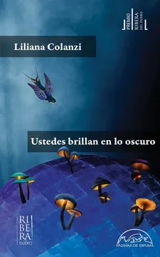

Ustedes brillan en lo oscuro
Liliana Colanzi
De qué trata
Los cuentos de Liliana Colanzi exploran diversas formas de narrar el tiempo: como el viaje geológico en una cueva, la búsqueda de las raíces históricas de la explotación del caucho en las ruinas de un pueblo amazónico, o la temporalidad dislocada de una colonia religiosa. En este libro la radiación es un agente invisible que afecta a los jóvenes que viven cerca de una central nuclear andina y a los recolectores de chatarra de una ciudad brasileña.
Por qué dialoga con Latinoamérica hoy
Ganadora del VII Premio Ribera del Duero, esta obra consta de seis cuentos. En «Los ojos más verdes» aborda la aspiración de ciertos sectores a estándares europeos y el rechazo a lo indígena. La autora utiliza la literatura para exponer las desigualdades y los problemas subyacentes de su propio contexto cultural. El cuento «La cueva» destaca porque el protagonista es un espacio físico: una cueva. La historia se construye mediante escenas que ocurren en un mismo lugar pero en distintas épocas, abarcando desde la prehistoria hasta el futuro. Aborda la ecología desde una perspectiva distópica y de ciencia ficción, enfocándose en las consecuencias del descuido humano sobre el entorno. En el cuento «Atomito» presenta una ciudad latinoamericana marcada por un futuro decadente, con basureros de chatarra y un ambiente post-apocalíptico tras la instalación de una central nuclear.